用于新1系/3系 BMW 1.6T增压发动机小析
[汽车点评网 技术介绍] 关注BMW品牌的朋友想必知道，近期全球媒体已经在西班牙巴塞罗那完成了对代号F30的新一代3系的试驾，而当一部分人对于上一代E90 3系上那台经典的直六发动机被代号N20的2.0T直列四缸涡轮增压发动机取代事实的感叹还没结束，我们就又获悉了更多对“怀旧派”颇为不幸的消息：明年年底之前，新3系还将发布两款入门车型用以取代目前的320i及325i，而它们就是搭载了全新1.6T发动机的316i以及搭载低功率版2.0T发动机的320i。
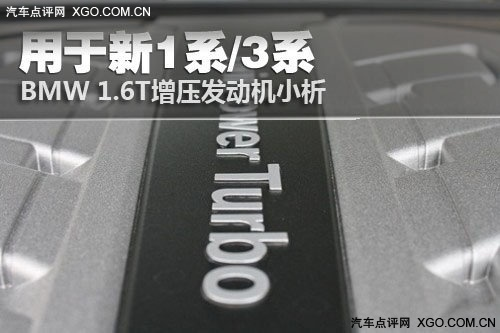
1.6T发动机？你可能多少感到有点措手不及，不过想想也不难理解，毕竟F20一代的新1系上已经采用了1.6L双涡管单涡轮增压发动机（新1系在国内已经公布了预售价格）。
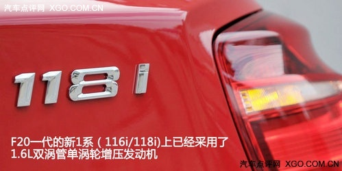
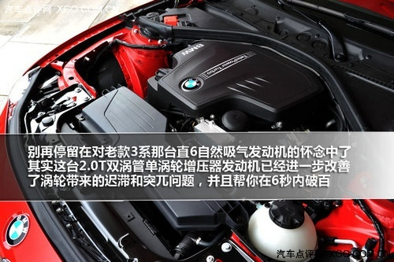
这台1.6T源自哪里？我不由自主的联想到了和BMW联系紧密的现款MINI Cooper S上的那台感觉蛮有劲儿的1.6T涡轮增压发动机（5500rpm可提供184马力最大功率、1600-5000rpm贡献240牛米峰值扭矩）。
不过根据来自网络的相关资料显示，目前新1系中的116i和118i上的、以及未来在3系入门车款316i上将使用的并非现款Cooper S上的那台宝马内部代号为N14的发动机，而是为伴随新一代1系在今年面世的N13系列机型，两者的差别让我们通过下面的比较来看。
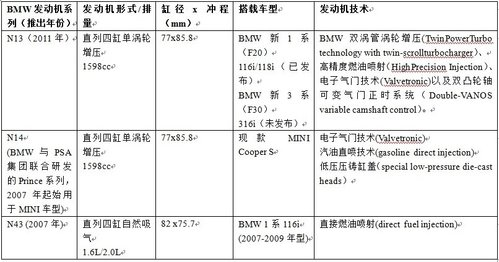
N14系列发动机：宝马内部代号N14的1.6L发动机来自于BMW集团和PSA标致-雪铁龙集团的联合研发，更广泛的名称是Prince系列引擎。这一紧凑直列四缸小排量发动机也采用了诸如汽油直喷和可变气门正时等现代发动机技术。BMW用这一发动机在2007年取代了之前服役于MINI的Tritec系列发动机，BMW集团在其位于英国伯明翰附近的汉姆斯霍尔（Hams Hall）发动机工厂进行生产。
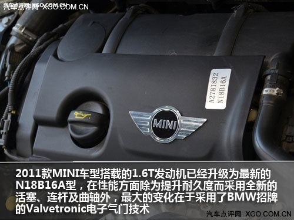
N18B16A来自于N14B16A的技术升级进化
技术细节方面，MINI Cooper S采用分支型号为THP175的Prince系列1.6T涡轮增压发动机，拥有77mm的缸径和85.8mm的冲程。研发团队中的宝马工程师们将BMW的Valvetronic电子气门技术为代表的一些领先技术引入；而1.6T涡轮增压发动机则还带有汽油直喷技术以及特别的低压压铸缸盖（special low-pressure die-cast heads）技术。
N13系列：基本可以理解为技术全面升级的N14
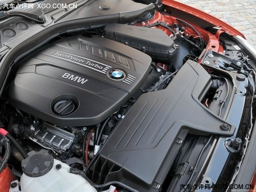
可以说，继承了BMW高效动力概念的N13继承了来自N14的全铝发动机体，甚至连缸径和冲程尺寸都进行了共享。不过除此之外，N13上大量采用了来自新3系N20发动机的先进技术，例如BMW的双涡管单涡轮增压（TwinPower Turbo technology with twin-scrollturbocharger）、高精度燃油喷射（HighPrecision Injection）、Valvetronic电子气门技术以及双凸轮轴可变气门正时系统（Double-VANOS variable camshaft control）。
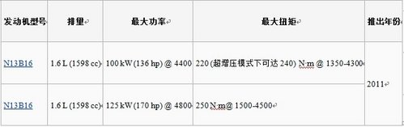
当然，除了BMW旗下车型之外，也不排除在预计于2013年上市的下一代MINI车型上共享使用的可能。值得一提的是，N13的出现也是取代前辈N43四缸自然吸气发动机的信号，2007年引入市场的N43系列发动机（包括1.6L、2.0L排量）主要用于1系车型之上。
相关技术介绍：
Valvetronic电子气门
简单概括的说，此项技术实际就是通过电控调节每个汽缸上进气阀门的开度，省掉了节气门，从而可以使发动机更顺畅地进气呼吸，在保证性能（响应速度）的同时进一步降低油耗。
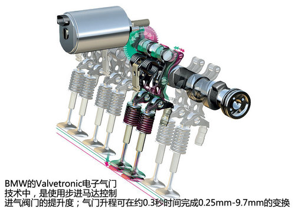
从技术细节来说：Valvetronic电子气门与传统节气门的情况相反，空气可以通过进气歧管自由流动，Valvetronic电子气门精确地调节进入汽缸的空气量。而由于消除了传统节气门造成的泵吸损失和空气流扰动，发动机更加高效，反应也更加迅捷。
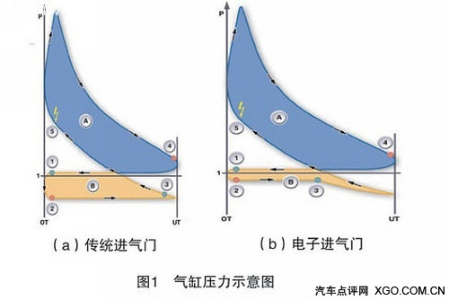
Valvetronic电子气门使用步进马达控制装备有一系列中间摇臂的次级偏心轴，而次级偏心轴则又控制阀门提升度。而虽然作为一种控制空气供给的手段，节气门已不再是必要的，但出于安全考虑，节气门仍被安装并将作为紧急后备装置存在。
据宝马官方介绍称：通过优化燃油／空气混合过程，Valvetronic电子气门最多能够节省10%的燃油（以ECE驾驶标准为准）。此外，Valvetronic电子气门还有助于改善车辆冷起动能力，降低废气排放并提供更平稳迅捷的动力输出。
双涡管单涡轮增压:（TwinPower Turbo technology with twin-scrollturbocharger）
从构造上直观区分双涡管单涡轮增压器的方法比较简单，就是看进入涡轮增压器排气涡轮部分的发动机排气歧管是否是由两个分离导管组成的。普通单涡轮上只能看到有1个排气口，而双涡管单涡轮增压器因为排气歧管中间带有涡轮格，从而把排气口分成了两个部分。
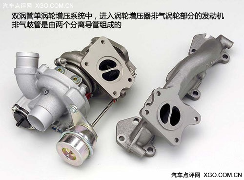
在具体运转差异上，以点火顺序一般为1-3-4-2缸的四缸发动机为例来说，如果采用普通的单涡管单涡轮增压方式，那么其排气岐管是将所有气缸的排气歧管连接在一起、汇总之后再吹向涡轮的。这种简单耐用且成本较低的设计存在一个小问题，就是当单个气缸工作时，其产生气体的脉冲谐振会影响到其他缸体的排气效率，继续循环工作下去，难免将导致下一个做功循环的总功率下降。
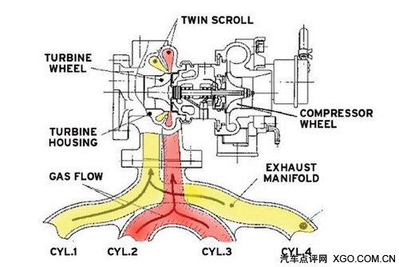
而双涡管单涡轮增压器通过让1/4气缸的排气通过一个涡管来排气，而2/3缸则通过另一个涡管排气。接下来，各来自两个气缸的两股气流进入涡轮增压器推动涡轮扇叶，涡轮扇叶同时交互接触到来自歧管的两个不同导管的气流，而分离的排气导管所排出的气体因为可以做到彼此不会以负面方式交互影响，从而能能让气流更平稳地推动涡轮增压器，也就使得循环反复的每次做功和进气都不受影响，从而达到更佳的运行效率。
据称，双涡管单涡轮增压技术运用后，相比普通单涡管增压器的进气燃烧效率会提高7%～8%，换言之也可以进一步理解为发动机的效能提高了7%～8%。车辆性能和燃油经济性都会因此受益。
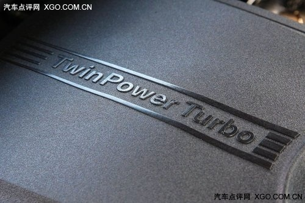
值得一提的是，在今年刚刚结束的广州车展宝马之夜活动上，BMW宣布即将引入全新BMW TwinPower Turbo直列4缸汽油增压发动机在沈阳生产。而这一全球首款集合了双涡管单涡轮增压技术、VALVETRONIC电子气门技术、第二代缸内高精度直喷技术于一身的2.0T 4缸发动机，已在本次广州车展亮相的国产X1上搭载。